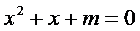
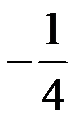
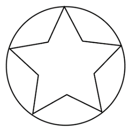
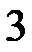
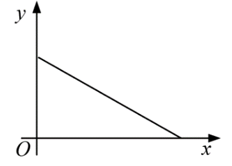

2022年北京市中考数学真题 · 选择题 第6、7、8题
6. 若关于 的一元二次方程
的一元二次方程

有两个相等的实数根，则实数 的值为（ ）
的值为（ ）A.  B.
B.

C.  D.
D. 
7. 图中的图形为轴对称图形，该图形的对称轴的条数为（ ）

A.  B.
B.  C.
C.

D. 
8. 下面的三个问题中都有两个变量：
①汽车从A地匀速行驶到B地，汽车的剩余路程y与行驶时间x；
②将水箱中 水匀速放出，直至放完，水箱中的剩余水量y与放水时间x；
水匀速放出，直至放完，水箱中的剩余水量y与放水时间x；
③用长度一定的绳子围成一个矩形，矩形的面积y与一边长x，其中，变量y与变量x之间的函数关系可以利用如图所示的图象表示的是（ ）

A. ①②B. ①③C. ②③D. ①②③